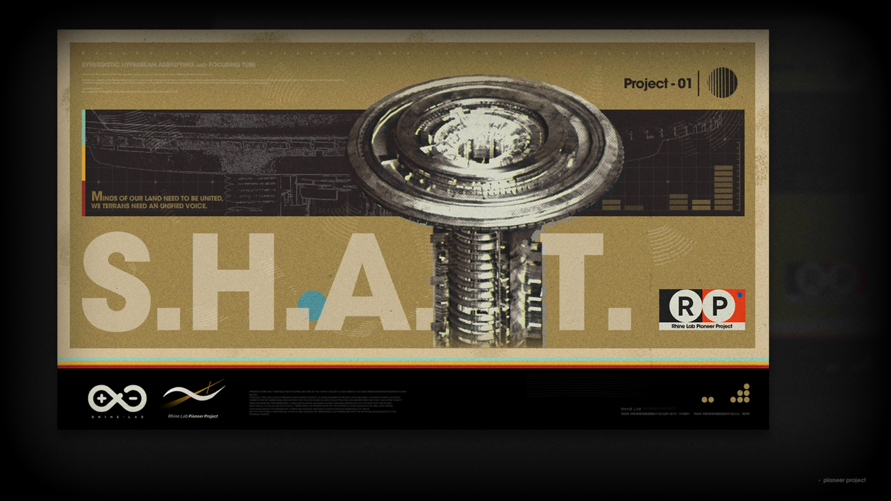
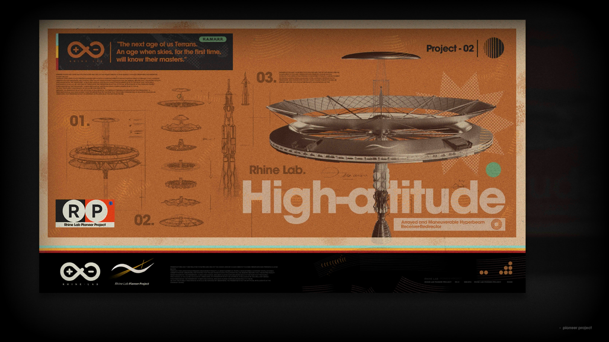
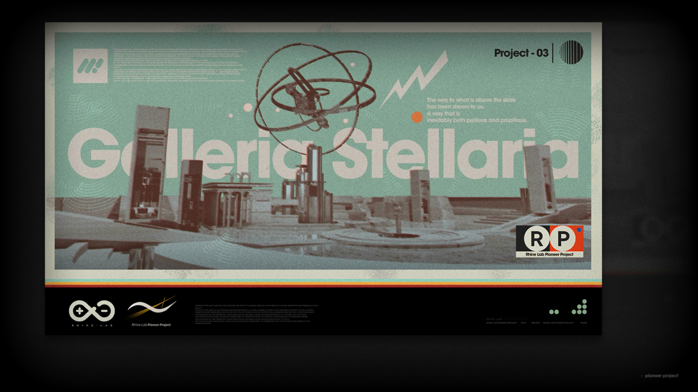
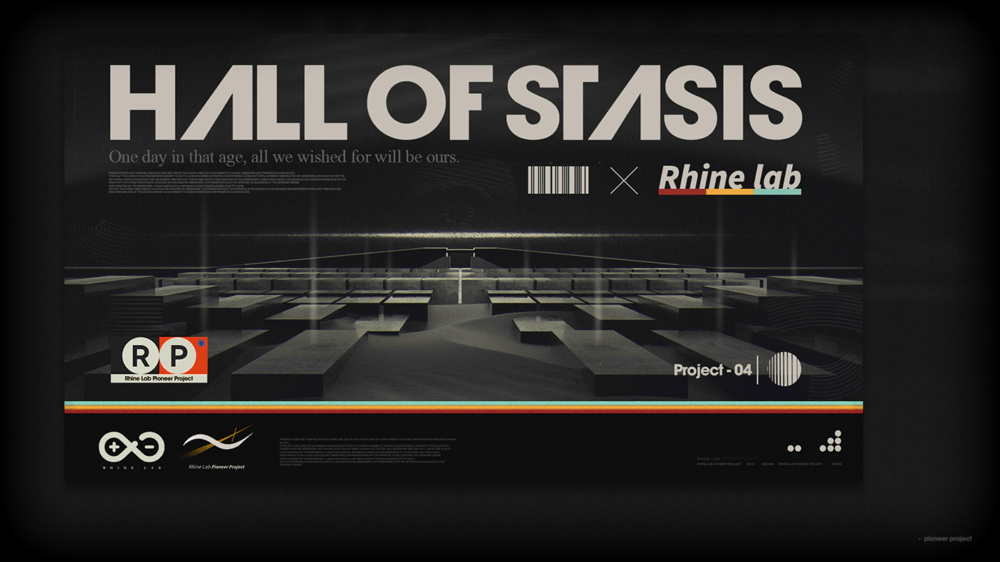

能量井
Project-01
聚焦发生器
Project-02
万星园
Project-03
静滞所
Project-04

Research +1
调查结语
The next age of us Terrans.An age when skies,for the first time,will know their masters.
泰拉人的下一个时代，是天空首次知晓它的主人的时代。
调查线索
克里斯腾用它对准天空，而我们应该用它对准谁？

Research +1
调查结语
The way to what is above the skies has been shown to us.
A way that is inevitably both perilous ans propitious.
通往天空之上的道路，一条注定危险又有利的道路，已经向我们指明了。
调查线索
迈向群星的第一步，是征服天空，我们已经走在了这条道路上。

Research +1
调查结语
Minds of our land need to be united,we Terrans need an unified voice.
这片大地上的思想需要团结，我们泰拉人需要一个统一的声音。
调查线索
我们向往星星已有千万年，现在，是时候向他们伸出手了。

Research +1
调查结语
One day in that age,all we wished for will be ours.
总有一天，在那个时代，我们所希望的一切都会实现。
调查线索
我们终有一天会探明这座墓园的秘密，但或许到了那时，它已不再重要。